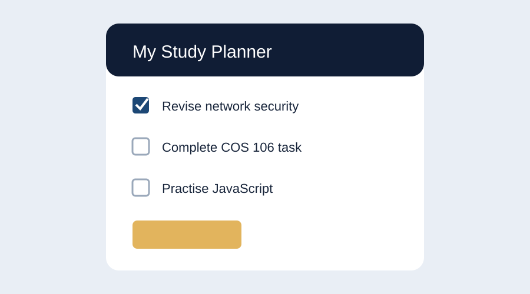

HTML · CSS
Personal Portfolio Website
A responsive multi-page portfolio introducing my background, education, technical skills and career goals.
View this website ↗MY WORK
Sample projects demonstrating my learning and practical interests. These are portfolio demonstrations and can be expanded as I gain experience.
A responsive multi-page portfolio introducing my background, education, technical skills and career goals.
View this website ↗
A task manager that lets students add study tasks, mark work as completed and remove tasks. Tasks are saved in the browser.
Open planner ↗A sample awareness resource explaining how to recognise suspicious messages, inspect links and protect account credentials.
Discuss project ↗Sample media files are included in the media folder. Replace the sample clip and audio with your own recorded presentation if your lecturer requires original multimedia.